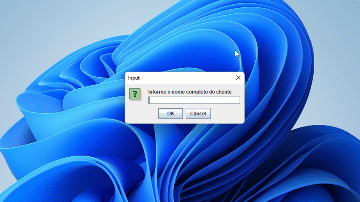
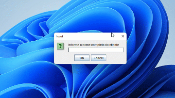
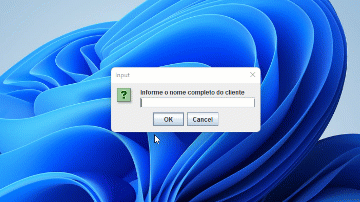

Este projeto desenvolvi quando estava iniciando no mundo da programação, feito em JAVA, e uma biblioteca chamada JOptionPane que monta estas micro janelas.
A ideia do projeto, foi desenvolver baseado a orientação a objetos, uma aplicação capaz de verificar a possibilidade de liberação de crédito para um cliente baseado em seu salário.
Tópicos de Estudo


